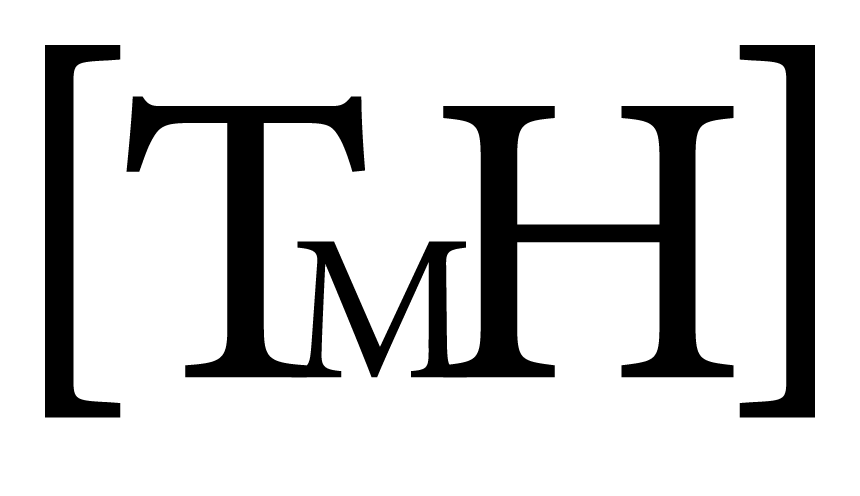

PhD Blog
Tobias M. Holden
CURRICULUM VITAE
Blogs
PhD Blog
Categories
All
(4)
Conferences
(1)
General
(2)
Research
(1)
PhD Blog
Author
Tobias M. Holden

AAP/ASCI/APSA Joint Meeting 2023
Apr 21, 2023
Blog Post #3
Apr 3, 2023
Blog Post #2
Apr 2, 2023
Visit to Swiss TPH
Apr 1, 2023
No matching items